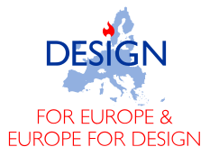
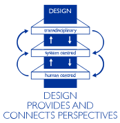

Give Design a structural role in FP10, the Union's next research and innovation programme. The architecture is being decided now, and Design must be built into it.
Give Design a structural position in FP10.
The undersigned, Europe's Design Research faculties, Design Education institutes, and Design Industry, stand ready to take their role in FP10.

Technology is crucial for Europe's future, but technology alone cannot secure the Union's autonomy. Innovations deliver impact only when they are adopted by users, embedded in infrastructures, and developed through transdisciplinary efforts. That is the work of Design.
Design enables the translation of fundamental insights from Pillar I into innovative applications in Pillar II, carries them into market innovation in Pillar III, and helps Pillar IV embed them across the European Research Area, so they are taken up effectively and at scale. Design translates societal challenges into technological solutions like no other discipline, making it the true engine of innovation.
As early as 2009, the European Commission identified a strong positive correlation between the use of design and national competitiveness. The evidence has only grown since.
Design ensures that the Union's innovations are developed with and for the people who will use, share, and further advance them, enabling sustainable impact.
Design grounds innovations securely and purposefully in societal, economic, and industrial networks and infrastructures, reinforcing Europe's transition toward stable sovereignty and scalable competitiveness.
Design's methodologies foster creative collaboration between engineering and other scientific disciplines, between academia and practice, between individuals and policy, and between short-term and long-term values.

Organisations sign on below. Every name strengthens the case before FP10 is finalised.
Loading the list of signatories…